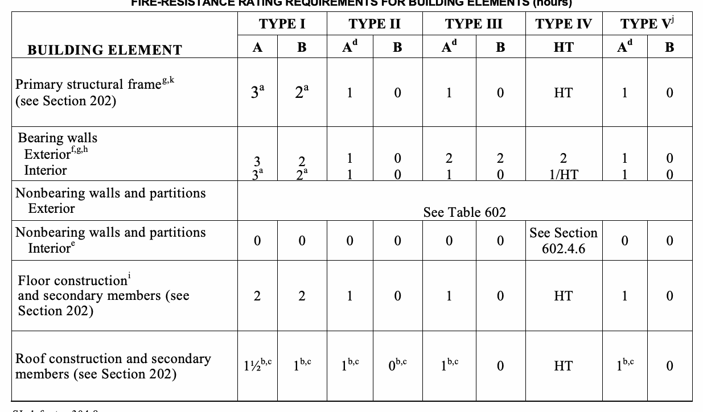
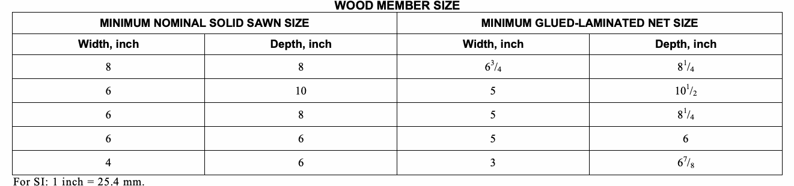
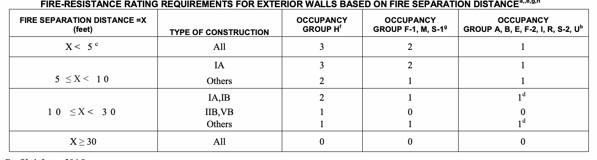

The provisions of this chapter shall control the classification of buildings as to type of construction.

Buildings and structures erected or to be erected, altered or extended in height or area shall be classified in one of the five construction types defined in Sections 602.2 through 602.5. The building elements shall have a fire-resistance rating not less than that specified in Table 601 and exterior walls shall have a fire-resistance rating not less than that specified in Table 602. Where required to have a fire-resistance rating by Table 601, building elements shall comply with the applicable provisions of Section 703.2. The protection of openings, ducts and air transfer openings in building elements shall not be required unless required by other provisions of this code. Buildings constructed or altered inside the fire district shall further comply with Appendix D.
A building or portion thereof shall not be required to conform to the details of a type of construction higher than that type, which meets the minimum requirements based on occupancy even though certain features of such a building actually conform to a higher type of construction. Classification shall be that of the minimum requirement unless all of the requirements for the higher type of construction are met.
Exception: Portions of buildings that cantilever over an adjacent building or tax lot shall also comply with the fire-resistance ratings of Section 705.12.
Types I and II construction are those types of construction in which the building elements listed in Table 601 are of noncombustible materials, except as permitted in Section 603 and elsewhere in this code.
Type III construction is that type of construction in which the exterior walls are of noncombustible materials and the interior building elements are of any material permitted by this code. Fire-retardant-treated wood framing complying with Section 2303.2 shall be permitted within exterior wall assemblies of a 2-hour rating or less.
Exceptions:
1. In Group I-1, R- 1, and R-2 occupancies, all exterior walls, fire walls, exit passageways, and shaft enclosures shall be noncombustible.
2. In Group F occupancies subject to Section 270(1) of the New York State Labor Law, all exterior wall assemblies and all structural elements shall meet the requirements for a “fireproof building” as such term is defined in Section 264 of such law.
3. Inside the fire district, exterior load-bearing walls shall be constructed of noncombustible material.
4. Inside the fire district, exterior nonload-bearing walls may be constructed with fire-retardant-treated wood complying with Section 2303.2 where the building is equipped throughout with an automatic sprinkler system in accordance with Sections 903.3.1.1 through 903.3.1.3, unless otherwise prohibited by Exception 1 or 2 above.
Type IV construction (Heavy Timber, HT) is that type of construction in which the exterior walls are of noncombustible materials and the interior building elements are of solid or laminated wood without concealed spaces. The details of Type IV construction shall comply with the provisions of this section. Fire-retardant-treated-wood framing complying with Section 2303.2 shall be permitted within exterior wall assemblies with a 2-hour rating or less. Minimum solid sawn nominal dimensions are required for structures built using Type IV construction (HT). For glued-laminated members the equivalent net finished width and depths corresponding to the minimum nominal width and depths of solid sawn lumber are required as specified in Table 602.4.
Exceptions:
1. In Group I-1, R-1, and R-2 occupancies, all exterior walls, fire walls, exit passageways, and shaft enclosures shall be noncombustible.
2. In Group F occupancies subject to Section 270(1) of the New York State Labor Law, all exterior wall assemblies and all structural elements shall meet the requirements for a “fireproof building” as defined in Section 264 of such law.
3. Inside the fire district, exterior load-bearing walls shall be constructed of noncombustible material.
4. Inside the fire district, exterior non-bearing walls may be constructed with fire-retardant-treated wood complying with Section 2303.2 where the building is equipped throughout with an automatic sprinkler system in accordance with Sections 903.3.1.1 through 903.3.1.3, unless otherwise prohibited by Exception 1 or 2 above.

Wood columns shall be sawn or glued laminated and shall not be less than 8 inches (203 mm) nominal in any dimension where supporting floor loads and not less than 6 inches (152 mm) nominal in width and not less than 8 inches (203 mm) nominal in depth where supporting roof and ceiling loads only. Columns shall be continuous or superimposed and connected in an approved manner.
Wood beams and girders shall be of sawn or glued-laminated timber and shall be not less than 6 inches (152 mm) nominal in width and not less than 10 inches (254 mm) nominal in depth. Framed sawn or glued-laminated timber arches, which spring from the floor line and support floor loads, shall be not less than 8 inches (203 mm) nominal in any dimension. Framed timber trusses supporting floor loads shall have members of not less than 8 inches (203 mm) nominal in any dimension.
Wood-frame or glued-laminated arches for roof construction, which spring from the floor line or from grade and do not support floor loads, shall have members not less than 6 inches (152 mm) nominal in width and have less than 8 inches (203 mm) nominal in depth for the lower half of the height and not less than 6 inches (152 mm) nominal in depth for the upper half. Framed or glued laminated arches for roof construction that spring from the top of walls or wall abutments, framed timber trusses and other roof framing, which do not support floor loads, shall have members not less than 4 inches (102 mm) nominal in width and not less than 6 inches (152 mm) nominal in depth. Spaced members shall be permitted to be composed of two or more pieces not less than 3 inches (76 mm) nominal in thickness where blocked solidly throughout their intervening spaces or where spaces are tightly closed by a continuous wood cover plate of not less than 2 inches (51 mm) nominal in thickness secured to the underside of the members. Splice plates shall be not less than 3 inches (76 mm) nominal in thickness. Where protected by approved automatic sprinklers under the roof deck, framing members shall be not less than 3 inches (76 mm) nominal in width.
Floors shall be without concealed spaces. Wood floors shall be of sawn or glued-laminated planks, splined or tongue-and-groove, of not less than 3 inches (76 mm) nominal in thickness covered with 1-inch (25 mm) nominal dimension tongue-and-groove flooring, laid crosswise or diagonally, or 0.5-inch (12.7 mm) particleboard or planks not less than 4 inches (102 mm) nominal in width set on edge close together and well spiked and covered with 1-inch (25 mm) nominal dimension flooring or 15/32-inch (12 mm) wood structural panel or 0.5-inch (12.7 mm) particleboard. The lumber shall be laid so that no continuous line of joints will occur except at points of support. Floors shall not extend closer than 0.5 inch (12.7 mm) to walls. Such 0.5-inch (12.7 mm) space shall be covered by a molding fastened to the wall and so arranged that it will not obstruct the swelling or shrinkage movements of the floor. Corbeling of masonry walls under the floor shall be permitted to be used in place of molding. X < 5 As per Table 602 5 ≤ X<10 As per Table 602 10 ≤ X < 30 1 hour X ≥ 30 As per Table 602.

Roofs shall be without concealed spaces and wood roof decks shall be sawn or glued laminated, splined or tongue-and-groove plank, not less than 2 inches (51 mm) nominal in thickness, 11/8-inch-thick (32 mm) wood structural panel (exterior glue), or of planks not less than 3 inches (76 mm) nominal in width, set on edge close together and laid as required for floors. Other types of decking shall be permitted to be used if providing equivalent fire resistance and structural properties.
Partitions shall be of solid wood construction formed by not less than two layers of 1-inch (25 mm) matched boards or laminated construction 4 inches (102 mm) thick, or of 1-hour fire-resistance-rated construction.
Where a horizontal separation of 20 feet (6096 mm) or more is provided, wood columns and arches conforming to heavy timber sizes shall be permitted to be used externally, except as prohibited by Section 602.4 for Occupancy Groups F, I-1, R-1 and R-2.
Type V construction is that type of construction in which the structural elements, exterior walls and interior walls are of any materials permitted by this code. Type V construction shall not be permitted inside the fire district unless otherwise permitted by Section D105.1.
Exception: In Group F occupancies subject to Section 270(1) of the New York State Labor Law, all exterior wall assemblies and all structural elements shall meet the requirements for a “fireproof building” as defined in Section 264 of such law.
CONSTRUCTION
Combustible materials shall be permitted in buildings of Type I or II construction in the following applications and in accordance with Sections 603.1.1 through 603.1.3.
1. Fire-retardant-treated wood, complying with Section 2303.2, shall be permitted in:
1.1. Nonbearing interior partitions where the required fire-resistance rating is 1 hour or less.
Exception: Public corridors and exits shall be constructed of noncombustible materials.
1.2. Roof construction as permitted in Table 601, Note b.
2. Thermal and acoustical insulation, other than foam plastics, having a flame spread index of not more than 25.
Exceptions:
1. Insulation placed between two layers of noncombustible materials without an intervening airspace shall be allowed to have a flame spread index of not more than 100.
2. Insulation installed between a finished floor and solid decking without intervening airspace shall be allowed to have a flame spread index of not more than 200.
3. Foam plastics in accordance with Chapter 26.
4. Roof coverings that have an A or B classification as defined in Section 1505.
5. Interior floor finish and floor covering materials installed in accordance with Section 804.
6. Millwork such as doors, door frames, window sashes and frames.
7. Interior wall and ceiling finishes installed in accordance with Sections 801 and 803.
8. Trim installed in accordance with Section 806.
9. Where not installed over 15 feet (4572 mm) above grade, show windows, nailing or furring strips and wooden bulkheads below show windows, including their frames, aprons and show cases.
10. Finish flooring installed in accordance with Section 805.
11. Partitions dividing portions of stores, offices or similar places occupied by one tenant only and which do not establish a corridor serving an occupant load of 30 or more shall be permitted to be constructed of fire-retardant-treated wood, 1-hour fire-resistance-rated construction or of wood panels or similar light construction up to 6 feet (1829 mm) in height.
12. Stages and platforms constructed in accordance with Sections 410.3 and 410.4, respectively.
13. Combustible exterior wall coverings, balconies and similar projections and bay or oriel windows in accordance with Chapter 14.
14. Blocking such as for handrails, millwork, cabinets and window and door frames.
15. Light-transmitting plastics as permitted by Chapter 26.
16. Mastics and caulking materials applied to provide flexible seals between components of exterior wall construction.
17. Exterior plastic veneer installed in accordance with Section 2605.2.
18. Nailing or furring strips as permitted by Section 803.4.
19. Heavy timber as permitted by Note c to Table 601 and Section 602.4.7.
20. Aggregates, component materials and admixtures as permitted by Section 703.2.2.
21. Sprayed fire-resistant materials and intumescent and mastic fire-resistant coatings, determined on the basis of fire-resistance tests in accordance with Section 703.2 and installed in accordance with Sections 1704.11 and 1704.12, respectively.
22. Materials used to protect penetrations in fire-resistance-rated assemblies in accordance with Section 713.
23. Materials used to protect joints in fire-resistance-rated assemblies in accordance with Section 714.
24. Materials allowed in the concealed spaces of buildings of Types I and II construction in accordance with Section 717.5.
25. Materials exposed within plenums complying with Section 602 of the New York City Mechanical Code.
The use of nonmetallic ducts shall be permitted when installed in accordance with the limitations of the New York City Mechanical Code.
The use of combustible piping materials shall be permitted when installed in accordance with the limitations of the New York City Mechanical Code and the New York City Plumbing Code.
The use of electrical wiring methods with combustible insulation, tubing, raceways and related components shall be permitted when installed in accordance with the limitations of the New York City Electrical Code.